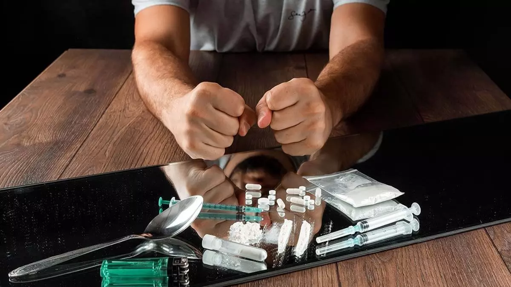

Cocaína
Riscos para a saúde:
- Problemas cardiovasculares, como arritmias e ataque cardíaco.
- Lesões cerebrais e acidente vascular cerebral (AVC).
- Danos ao nariz e às vias nasais devido ao uso nasal da droga.

Como se libertar do vício?
Algumas dicas e estratégias:
- Trabalhe com um profissional para criar um plano de recuperação que inclua metas de curto e longo prazo e estratégias para lidar com desafios.
- Encontre novas atividades e hobbies que mantenham sua mente ocupada e proporcionem satisfação sem recorrer à droga.
- Descubra as situações, pessoas e sentimentos que desencadeiam o desejo de usar cocaína e desenvolva estratégias para evitá-los ou lidar com eles de maneira saudável.
- A terapia cognitivo-comportamental e outras formas de terapia podem ajudar a entender os padrões de uso, desenvolver habilidades para lidar com os desejos e melhorar a saúde mental.
- Programas de tratamento especializados em dependência de cocaína podem fornecer suporte intensivo e uma abordagem estruturada para a recuperação.